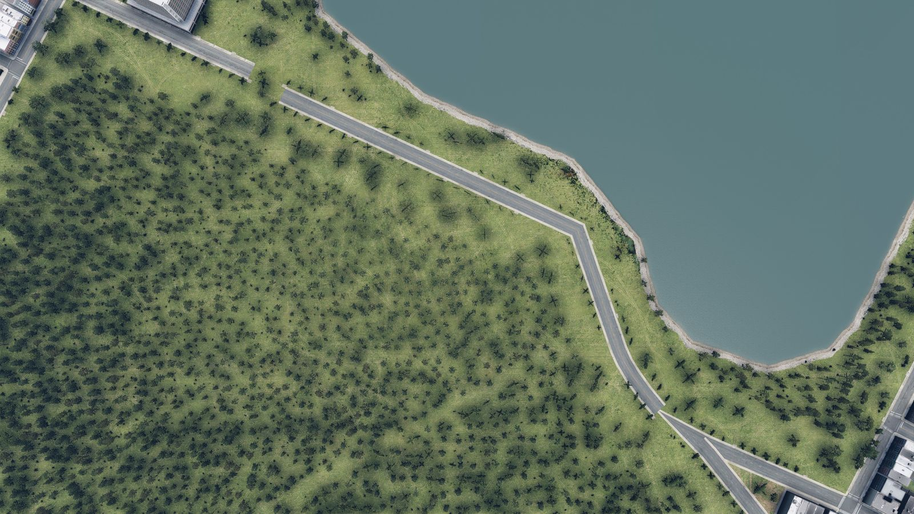
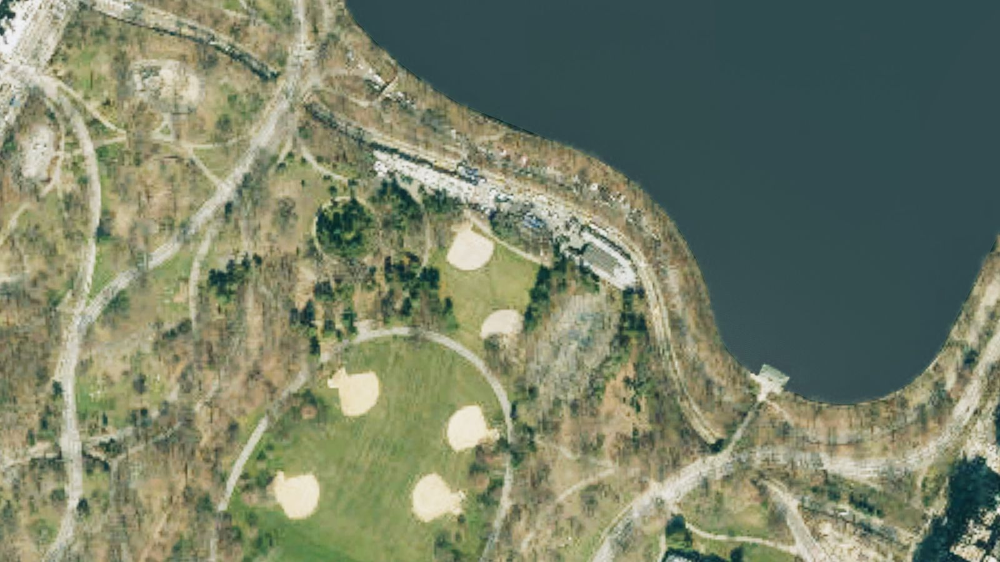
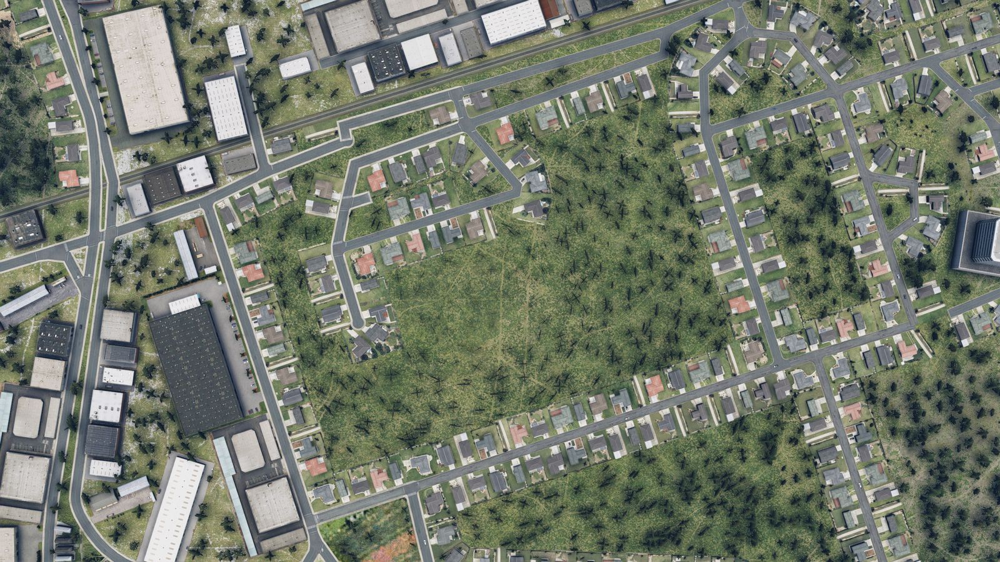
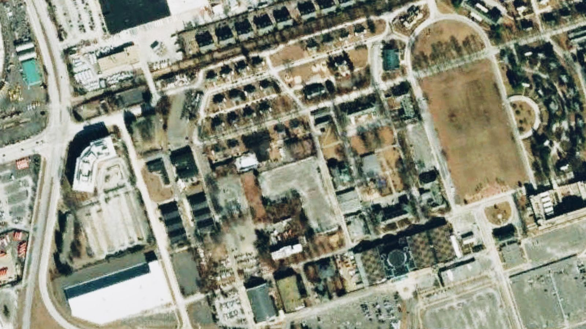

Windows 10 / 11
Installs WinFsp if it is missing (one administrator prompt). Updates itself.
The installer is not code-signed yet: if Windows shows "Windows protected your PC", choose More info, then Run anyway.
X-Plane 12 · Beta
ButterSat streams photo scenery and its terrain mesh into X‑Plane while you fly. It is automatic: install it, start X‑Plane and fly. It finds your X‑Plane and sets itself up, with nothing to configure, no packs to build and nothing to keep up to date.
Beta. Windows is the tested platform; macOS and Linux builds are new.


Installs WinFsp if it is missing (one administrator prompt). Updates itself.
The installer is not code-signed yet: if Windows shows "Windows protected your PC", choose More info, then Run anyway.
Apple silicon (.dmg) Intel (.dmg)
Needs macFUSE installed first. Updates itself.
First build, not yet tested in X-Plane. The app is not signed: right-click it and choose Open the first time.
AppImage Debian / Ubuntu (.deb)
Needs FUSE 3 (the fuse3 package). Updates itself; the .deb asks for your password when it does.
First build, not yet tested in X-Plane.
Questions, bugs or feedback: join us on Discord. When something goes wrong, open Advanced → Logs in the ButterSat app, press Copy log and paste it into your message.
Terrain meshes come from a signed catalog and are verified before use. Textures are assembled from imagery tiles band by band, compressed to the format X-Plane expects, and cached on disk.
Meshes are completed on your machine with the water and seasonal layers from your own copy of X-Plane's Global Scenery. Nothing from Laminar Research is redistributed.
On a 186 km leg at 450 knots we measured the same number of frame hitches as with default scenery, and a higher frame rate: 72 fps against 61.
X-Plane reads each texture once when it loads an area. While its loading screen is up, ButterSat waits for full-resolution imagery rather than handing over a blurry placeholder that would stay for the whole flight.
Free government aerial photography where it exists: USGS in the United States, IGN in France, swisstopo, PDOK in the Netherlands, PNOA in Spain and basemap.at in Austria. Esri or Bing worldwide if you accept their terms.
Warm up the area around a departure airport, or along your latest SimBrief route, before you load the flight.
Put the cache on a large disk and set a size limit. You can move it later from the app; it copies across drives and checks free space first.
Already have Ortho4XP tiles? Import them and they are served alongside the streamed areas.


Imagery is available worldwide. Terrain meshes are built ahead of time with Ortho4XP from OpenStreetMap and public elevation data, then published to the catalog.
No. ButterSat's meshes are built with Ortho4XP on our side and streamed to you. If you already have Ortho4XP packs, you can keep using them.
As much as you allow. Imagery and meshes are cached up to the limits you set, on the drive you choose, and the oldest areas are removed first.
The first time you start a flight somewhere new, expect around a minute and a half while the imagery is fetched. Areas you have flown before load from the cache. Once you are flying, new areas stream in the background.
It adds one entry to scenery_packs.ini, with a backup, and removes it again when uninstalled. Everything else lives in ButterSat's own folders.
On our Discord. Tell us what you saw and where you were flying, and paste your log: in the app, Advanced → Logs → Copy log.
Open government imagery is free to use but varies by country; in the United States it is noticeably softer than Esri's. Esri and Bing are sharper and cover the whole world, under their providers' terms. You can switch at any time.